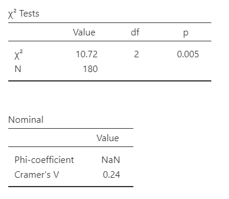
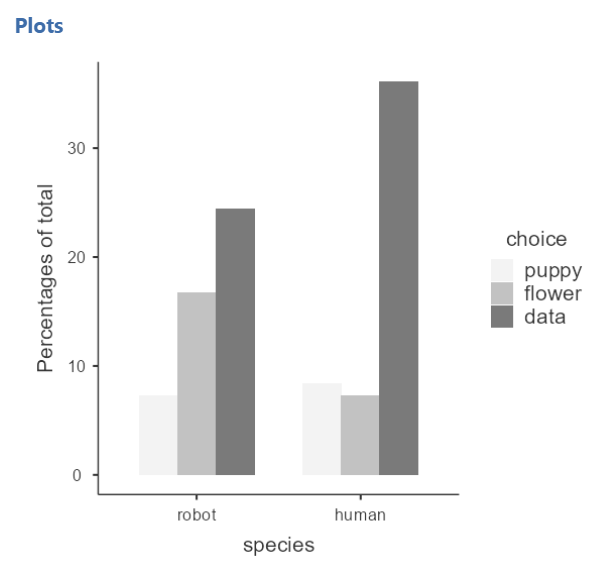
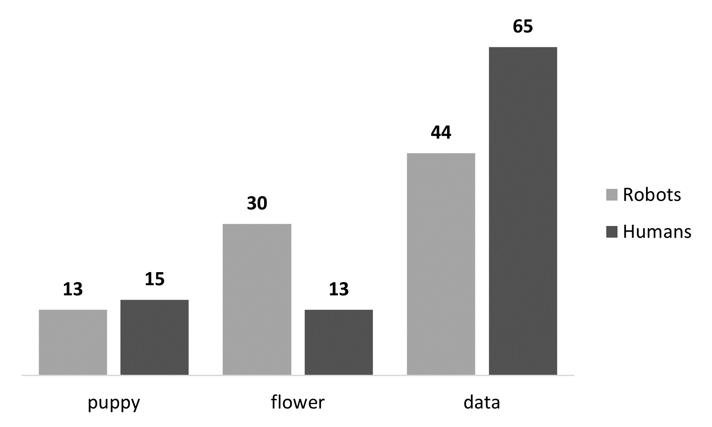

11.2 Chi-Square Test of Independence
The \(\chi^2\) (chi-square) test of independence (or association) tests whether an observed frequency distribution of a nominal variable matches an expected frequency distribution, but unlike the goodness-of-fit test we are looking at the relationship, independence, or association between two variables.
Our basic hypotheses for the chi-square test of indepdendence is as follows:
\(H_0\): There are no differences in frequencies of how the categories in one variable relate to the levels in another variable.
\(H_1\): At least one category in one variable has significantly different frequencies in another variable than we would expect.
Note that these are not how you should report your hypotheses! You should specify your hypotheses in relation to the nature of your two variables. It should be clear what your two variables are.
There is no directionality for a chi-square test, so there is no such thing as a one-tailed or two-tailed hypothesis.
We often communicate what kind of chi-square test we are performing by using language like “We performed a 2x3 chi-square test of independence.” This means that there are two variables, the first of which has 2 categories to the categorical variable and the second of which has 3 categories to the categorical variable. We might describe it in even more detail, such as “We performed a 2 (condition: experimental vs control) x 3 (mood: happy, sad, or neutral) chi-square test of independence.”
Step 1: Look at the Data
Let’s run an example with data from lsj-data. Open data from your Data Library in “lsj-data”. Select and open “chapek9”. This dataset indicates the ID number of the participant, the species (robot or human), and their preference of the three things (puppy, flower, or data).
For this example, imagine we are watching a show about the planet Chapek 9. On this planet, for someone to gain access to their capital city they must prove they’re a robot, not a human. In order to determine whether or not a visitor is human, the natives ask whether the visitor prefers puppies, flowers, or large, properly formatted data files.
This is what we would call a 2x3 chi-square test because the first variable species has two categories (robot or human) and the second variable choice has three categories (puppies, flowers, data).
Here’s a video walking through the chi-square test of independence example in this chapter.
Data Set-Up
Our data set-up for a chi-square test of independence is pretty simple. We just need two columns of nominal data, with one row per participant. Here’s our data for our example we’ll be working with, which you can find in the lsj-data called chapek9:
| ID | species | choice |
|---|---|---|
| 1 | robot | flower |
| 2 | human | data |
| 3 | human | data |
| 4 | human | data |
| 5 | robot | data |
| 6 | human | flower |
| 7 | human | data |
| 8 | robot | data |
| 9 | human | puppy |
| 10 | robot | flower |
Describe the Data
Once we confirm our data is setup correctly in jamovi, we should look at our data using descriptive statistics and graphs. First, our descriptive statistics are shown below. Remember that for nominal variables we should report frequency statistics, not means and medians and such. Bar plots continue to be a good way of visualizing the data.

Specify the Hypotheses
The question here is whether humans and robots differ in preferring puppies, flowers, or data so we can determine who is a robot so only robots are let into the city. Therefore, our hypotheses might be something like this:
\(H_0\): Humans and robots have similar preferences.
\(H_1\): Humans and robots have different preferences.
Step 2: Check Assumptions
The chi-square test of independence has the following assumptions:
Expected frequencies are sufficiently large, which is usually greater than 5. If you violate this assumption, you can use Fisher’s exact test.
- You test for this assumption by selecting “Expected counts” in the Cells tab for the test of independence. You will then see rows of expected counts in your contingency table. Look at the numbers and check that they are all 5 or greater.
Data are independent of one another, meaning each case contributes to only one cell of the table. If you violate this assumption, you may be able to use the McNemar test (next chapter).
- This requires knowing how your data was collected. If it’s a within-subjects design (i.e., all participants are in all conditions of one variable), then most likely you want to use McNemar’s test. If it’s a between-subjects design (i.e., some participants are in one condition of a variable), then you most likely meet this assumption and can perform the chi-square test of independence.
Step 3: Perform the Test
Go to the Analyses tab, click the Frequencies button, and choose “Independent Samples - \(\chi^2\) test of association”.
Move your two variables into the rows and columns boxes. In this case, move
choiceinto rows andspeciesinto columns. Note that the placement in rows or columns doesn’t really matter, but because we typically work with portrait pages I tend to prefer putting in rows whatever variable has more categories. In this case, choice has 3 categories and species only 2 so I like to put choice in rows and species in columns.Under the Statistics tab, select \(\chi^2\) under Tests and
Phi and Cramer's Vunder Nominal to get your effect size.Select
Expected countsunder Cells to test your assumption of expected frequencies. You can also request the row, column, and total percentages. I often find these easier to report and interpret.Select
Standardized residuals (adjusted Pearson)under Post Hoc Tests and highlight values above 1.96 (the statistically significant z-score). You can also just leave it at 2 which is close enough.Select
Bar Plotunder plots. You may want to tinker with the settings here of determining whether you should use a side by side or stacked bar type, counts or percentages, and rows or columns.
Ordinal Variable(s)
If either of your variables are ordinal, instead of selecting Phi and Cramer's V you should select Gamma or Kendall's tau-b. Which do you choose? Kendall's tau-b should only be chosen if you have a square table (e.g., 3x3, 4x4, 5x5) whereas Gamma can be done with any size table. Kendall's tau-b will be a slightly more conservative estimate compared to Gamma.
Step 4: Interpret Results
Below, I show the output for the Chi-Square test of independence, with the row % expected frequencies also shown to help in my interpretation of the results.

The first table shows us our observed and expected frequencies. We use the expected frequencies to test our assumption that expected frequencies are greater than 5. Our smallest expected frequncy is 13.53 so we meet this assumption.

The second table gives us our results. Our p-value (p = .005) is less than .05 so we can reject the null hypothesis that the observed frequencies match our expected frequencies. The degrees of freedom (df) is the number of categories of one variable minus one times the number of categories in the second variable minus one which is (r - 1)(c - 1) or in this case (2-1)(3-1) = 2. Note that N = 180, meaning we have 180 rows of data.
jamovi also gives us our Cramer’s V value. Note that it does not provide Phi because we don’t have a perfect square table (e.g., 2x2 or 3x3). These are measures of effect size for the chi-square. Cramer’s V can be interpreted similar to a correlation (ranges from 0 to 1, with higher scores meaning stronger relationships between the variables).
Lastly, newer versions of jamovi finally have post hoc tests! This allows us to find out where the significant differences are. We should compare to the z-score of 1.96 to see which are statistically significant. In this case, we can see there is no difference between robots and humans in whether they selected puppies but robots were significantly more likely to select flowers whereas humans were significantly more likely to select data.

Write Up the Results in APA Style
We can write up our results in APA something like this:
Pearson’s \(\chi^2\) test of independence showed a significant association between species and choice, \(\chi^2\) (2) = 10.72, p = .005, Cramer’s V = .24. Robots were more likely to say they prefer flowers (70%) compared to humans (30%; z = 3.22) and humans were more likely to say they prefer data (60%) compared to robots (40%; z = 2.65). Robots (46%) and humans (54%; z = 0.22) were equally likely to prefer puppies.
We can also use the observed frequencies to either visualize (see the next table) or write-up in a table. Here’s an example write-up with a table.
Pearson’s \(\chi^2\) test of independence showed a significant association between species and choice, \(\chi^2\) (2) = 10.72, p = .005, Cramer’s V = .24. Robots were more likely to say they prefer flowers whereas humans were more likely to say they prefer data (see table below).
Robots Humans puppy 13 (46%) 15 (54%) flower 30 (70%) 13 (30%) data 44 (40%) 65 (60%)
Visualize the Results
jamovi has some decent plots with some of the latest updates. Here’s one I created after tinkering with the settings under Plots on the chi-square setup. These are sufficient for your homework assignments in this class, but note that sometimes when there are many bars or long labels for the categories of your variable it will scrunch up. Hopefully jamovi will fix it in the future.

However, you can also create these pretty easily in Excel. There are two that I think work well for this dataset and our research questions. The first is a clustered column chart:

The second is a stacked bar chart with connected lines:

Which do you choose? Whichever you think better communicates the message of the results of the analysis! This takes skill and practice, and probably an entirely separate course on effective data visualization.
Fisher’s Exact Test
If you violate the assumption that your expected frequencies are sufficiently large and you have a 2x2 table, you can still perform the \(\chi^2\) test of independence but instead of selecting \(\chi^2\)you’ll select Fisher's exact test. You’ll interpret your results exactly the same but specify you used Fisher’s exact test. Here’s an example write-up from the results above:
Fisher’s exact test of independence showed a significant association between species and choice, \(\chi^2\) (2) = 10.72, p = .004, Cramer’s V = .24. Robots were more likely to say they prefer flowers (70%) compared to humans (30%) and humans were more likely to say they prefer data (60%) compared to robots (40%). Robots (46%) and humans (54%) were equally likely to prefer puppies.
Note that what changes is only the p-value from the chi-square test and Fisher’s exact test.
Additional Practice
Open the Sample_Dataset_2014.xlsx file that we will be using for all Your Turn exercises. You can find the dataset here: Sample_Dataset_2014.xlsx Download
To get the most out of these exercises, try to first find out the answer on your own and then go to the appendix to check your answer.
Is Athlete related to Gender?
Do you meet the assumptions?
Which test should you perform?
Are the observed frequencies similar to the expected frequencies?
What is your chi-square value, rounded to two decimal places?
Is Gender related to Rank?
Do you meet the assumptions?
Which test should you perform?
Are the observed frequencies similar to the expected frequencies?
What is your chi-square value, rounded to two decimal places?